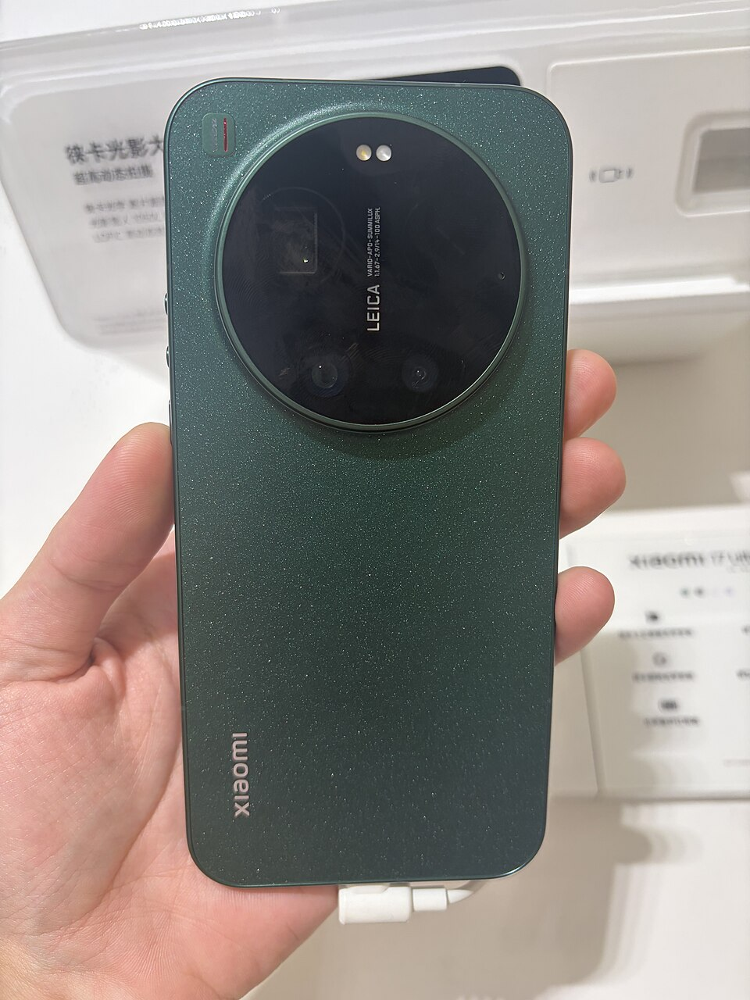
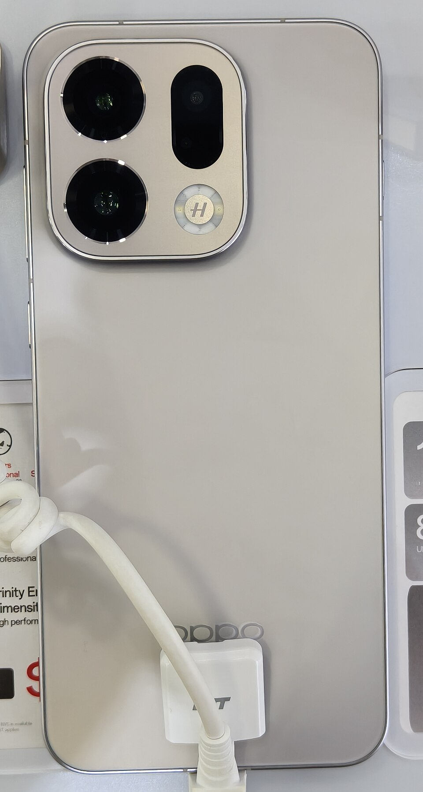

Not a remote control for somebody else's machine and not a rented box: the world runs on the device in your pocket. Friends join the way they always have, with an address.
[12:04:14] Done (2.317s)
> say back in five
[12:07:02] Melli joinedInstall it, open a world, send the address. Everything else happens on the phone.
Paper, Fabric, Forge, NeoForge, vanilla and Pumpkin. The app fetches the build and the matching Java runtime, on the device, without a PC.
Servers hibernate instead of running the battery empty. The address stays, the world is put away, and the next player wakes it in about twenty seconds.
82% battery, charging, one world asleep
KodaDash opens the live log, players, files and settings in a browser. It ships with the app; no plan to buy and no feature held back.
> say back in five
[12:04:30] [Server] back in fiveCreate a server, pick a name, and it answers under a normal subdomain in the vanilla server list. No port to remember, no mod on the client, no account needed to join.
Restart it, send a command, kick a player or pull a backup. Guests can be handed the same controls with an expiring invite that asks them to sign in first.
[12:04:11] Starting minecraft server version 1.21.11
[12:04:12] Preparing level "world"
[12:04:14] Done (2.317s)! For help, type "help"
> op Melli
[12:04:31] Melli is now an operator
[12:07:02] Melli joined the gameOne developer, in school, building this around a phone instead of around a server room. Parts of the site were drafted with an AI language model and reviewed by hand; the app, the networking and everything that executes are not.


Device photographs from Wikimedia Commons, shown for identification only; all rights belong to the respective manufacturers. The database, the tunnel server and the law texts sit in Germany.
Short answers to what people ask before they install. Everything else is in the documentation.
Each account can host a maximum of six (6) servers simultaneously. This limit applies across all server types (Minecraft servers and databases combined) and is in place to ensure fair use of the shared VPS proxy infrastructure. Creating multiple accounts to bypass this limit is not allowed and may result in a permanent ban.
Your server runs only while the KodaHosting app is active on your device. When the app is in the foreground, players can join freely. In the background, the server stays alive with reduced priority. When you close the app, the server stops. You can also hibernate servers to free up resources without deleting them.
When your phone's screen is off, Android may put the app into a deep sleep state depending on your battery settings. To keep the server accessible, disable battery optimization for KodaHosting in your Android settings, or keep the device plugged in. Players connecting through our VPS proxy will automatically reconnect once your device wakes up.
For a small survival server with 5–10 players, 1–2 GB of RAM is sufficient. For larger communities or heavy mod packs, allocate 3–4 GB. The app automatically caps your RAM allocation based on your device's available memory to prevent system instability. You can adjust the allocation at any time from the server management panel.
Yes. All player connections are routed through our central VPS infrastructure using secure reverse proxy tunnels (Bore / FRP). Players only ever see the IP address of our proxy server, never your home IP. This means your network remains completely private and protected from DDoS attacks or targeted harassment.
If your internet connection drops, players will be disconnected from the server. The server itself continues running on your device, and once your connection is restored, the proxy tunnel reconnects automatically and players can rejoin. World data is always saved locally on your device, so no progress is lost during disconnects.
Yes. The web dashboard at host.kodanetwork.eu lets you manage all your servers from any browser. The Server Manager gives you access to the live console (where you can execute commands and see server output in real-time) and the file management view (where you can upload worlds, install maps, and edit configuration files). Start, stop, restart, and other server lifecycle actions happen in the app directly. The dashboard communicates with your device through Supabase realtime updates.
Running a Minecraft server is computationally intensive and will generate heat and consume battery. We recommend keeping your device plugged in while hosting, placing it on a cool surface, and avoiding prolonged use in direct sunlight. The app includes a live performance monitor so you can track CPU and RAM usage. We are not liable for hardware damage, overheating, or battery degradation resulting from intensive use, as outlined in our Terms of Service.
No. KodaHosting is completely free — no purchase, no subscription, no premium features. The entire app, all engines, the VPS proxy infrastructure and the web dashboard are available to everyone at no cost. If you want to support development, there is an optional Ko-fi link in the app, but it is entirely voluntary and unlocks nothing.
KodaHosting is a hobby project by a single developer. Server infrastructure costs are kept low through efficient use of resources, and voluntary Ko-fi donations from supporters help cover ongoing hosting costs. There is no business model that requires charging users.